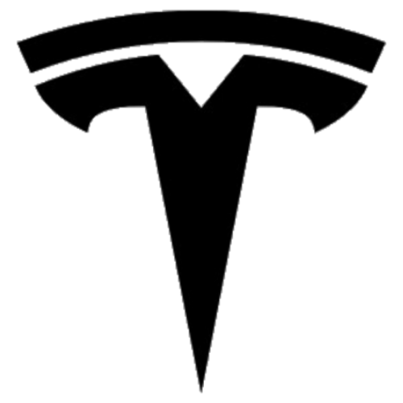

<div class="fill-height p-3" style="background-color: #b52e3c !important; overflow-y: scroll">
    <!-- Header -->
    <div class="ml-2 d-flex align-items-center">
        <div class="d-inline pr-2">
            
        </div>
        <div>
            <h1 class="mb-0">Powerwall: {{batteryService.last.voltage | number : '1.1-1'}} V</h1>
            <h6>Last Updated At: {{batteryService.last.timestamp | date: 'short'}}</h6>
            <h6 class="mb-0">Uptime: {{batteryService.last.uptime}}</h6>
        </div>
    </div>
    <div class="mt-3 d-flex flex-column flex-md-row">
        <div class="d-flex flex-md-column flex-row flex-wrap">
            <mat-card style="margin: 10px; min-width: 200px; width: 200px; height: 200px;">
                <canvas id="netPower" class="w-100"></canvas>
                <h5 class="text-center text-muted"><strong>Power: </strong>{{batteryService.last.power | number : '1.1-1'}} Watts</h5>
                <h5 class="text-center text-muted"><strong>Current: </strong>{{batteryService.last.current | number : '1.1-1'}} Amps</h5>
            </mat-card>
            <mat-card style="margin: 10px; min-width: 200px; width: 200px; height: 200px;">
                <mwl-gauge
                        [max]="100"
                        [color]="color"
                        [dialStartAngle]="-90"
                        [dialEndAngle]="-90.001"
                        [value]="(batteryService.last.soc || 0) * 100"
                        [label]="percent"
                        [animated]="true"
                        [animationDuration]="1">
                </mwl-gauge>
            </mat-card>
        </div>
        <div class="flex-grow-1" style="overflow: hidden; margin: 10px">
            <mat-card class="w-100">
                <canvas baseChart
                        [datasets]="socData"
                        [labels]="socLabels"
                        [options]="socOptions"
                        [legend]="false"
                        chartType="line">
                </canvas>
            </mat-card>
        </div>
    </div>
    <!-- Battery Cells -->
    <div class="d-flex flex-wrap mt-5">
        <div class="p-2 col-12 col-sm-6 col-lg-3" *ngFor="let battery of batteries; let i = index">
            <mat-card>
                <div class="d-flex w-100 justify-content-between align-items-center">
                    <div>
                        <h5 class="mb-0">{{battery.name}}</h5>
                    </div>
                    <div class="text-muted">
                        {{battery.negativeTemperature | number : '1.1-1'}} °C / {{battery.positiveTemperature | number : '1.1-1'}} °C
                    </div>
                </div>
                <div class="text-center my-3">
                    <mat-icon style="width: 240px; height: 240px; font-size: 240px">battery_full</mat-icon>
                    <span class="text-white font-weight-bold" style="position: absolute; left: 50%; top: 50%; transform: translate(-50%, 25%)">{{battery.voltage | number : '1.1-1'}} V</span>
                </div>
            </mat-card>
        </div>
    </div>
</div>
